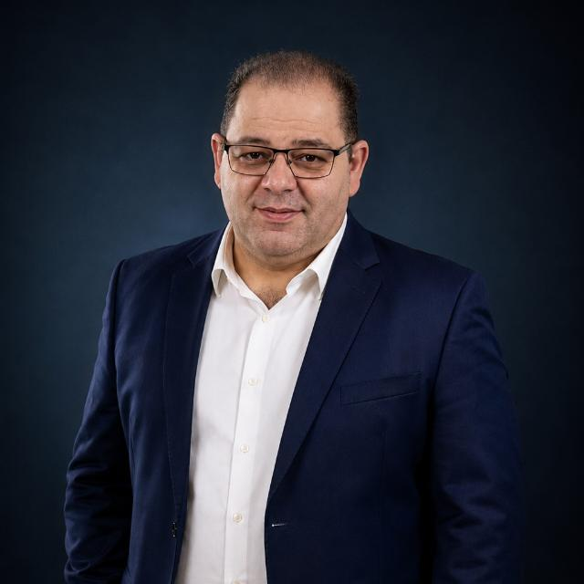

Minha inspiração

Uma das pessoas que mais me inspira na vida é meu pai. Para mim, ele não é apenas meu pai, mas também um grande amigo, conselheiro e uma das pessoas que mais me apoia. Sempre que preciso, ele está disposto a me ajudar, me orientar e me mostrar um caminho quando não sei qual decisão tomar.
História de vida
Meu pai é uma pessoa que sempre me ensinou a importância do trabalho, da dedicação e da perseverança. Ele enfrentou muitos desafios ao longo da vida, mas nunca desistiu de lutar pelos seus objetivos e pela nossa família. Sua história de vida é marcada por superação, coragem e determinação.
Valores e ensinamentos
Além de ser um exemplo de força e resiliência, meu pai também me ensinou valores importantes, como a honestidade, o respeito ao próximo e a importância de ajudar os outros. Ele sempre me incentivou a estudar, a buscar conhecimento e a nunca desistir dos meus sonhos.
Conquistas e realizações
Ao longo da vida, meu pai conquistou muitas coisas, mas o que mais admiro é a forma como ele sempre se dedicou à nossa família. Ele trabalhou duro para nos proporcionar uma vida melhor e sempre esteve presente nos momentos importantes. Suas conquistas são fruto de muito esforço, dedicação e amor pela família.
Admiro muito a história de vida dele. Desde criança, ele precisou aprender a ter responsabilidades e amadurecer muito cedo. Durante grande parte da sua infância e juventude, ele e minha avó enfrentaram juntos as dificuldades da vida. Mesmo sendo jovem, ele começou a trabalhar cedo e sempre procurou ajudar nas despesas de casa.
Aos 13 anos, ele aceitou Jesus e, desde então, passou a dedicar parte de sua vida à obra de Deus, algo que considero muito importante na história dele. Além disso, construiu sua carreira profissional com muito esforço e dedicação. Atualmente, trabalha como gestor na área de Assistência Social, contribuindo com diferentes prefeituras e ajudando no desenvolvimento de projetos e ações voltados para a população.
O que mais admiro nele é a capacidade de continuar ajudando outras pessoas mesmo tendo passado por dificuldades em sua própria vida. Ele me ensina, principalmente através de suas atitudes, que devemos trabalhar, estudar, ajudar as pessoas e nunca desistir diante das dificuldades.
Tenho como objetivo, no futuro, honrar tudo o que meu pai fez por mim e pela nossa família. Quero construir uma vida da qual ele possa se orgulhar, conquistar uma boa estabilidade financeira e, principalmente, poder proporcionar a ele momentos e experiências que talvez ele não tenha tido a oportunidade de viver. Para mim, ter sucesso não significa apenas ganhar dinheiro, mas também poder retribuir todo o apoio, carinho e ensinamentos que recebi.
O que ele me ensinou
Meu pai me ensinou a importância de ser uma pessoa responsável, dedicada e perseverante. Ele sempre me incentivou a estudar, a buscar conhecimento e a nunca desistir dos meus sonhos. Além disso, ele me ensinou valores importantes, como a honestidade, o respeito ao próximo e a importância de ajudar os outros.
Como ele me inspira
A história de vida do meu pai é uma grande inspiração para mim. Ele enfrentou muitos desafios, mas nunca desistiu de lutar pelos seus objetivos e pela nossa família. Sua força, coragem e determinação me motivam a seguir em frente, mesmo diante das dificuldades.
O impacto dele na minha vida
O impacto do meu pai na minha vida é imensurável. Ele sempre esteve presente nos momentos importantes, me apoiando, me orientando e me incentivando a ser uma pessoa melhor. Seus ensinamentos e valores moldaram quem eu sou hoje e continuam a me guiar em todas as áreas da minha vida.
O que ele representa para mim
Meu pai representa muito mais do que apenas um pai. Ele é um exemplo de força, coragem e determinação. Sua história de vida, seus valores e seus ensinamentos são uma fonte constante de inspiração para mim. Ele me mostra que, com dedicação, perseverança e fé, é possível superar qualquer desafio e alcançar nossos objetivos.
O que eu espero para o futuro
Para o futuro, espero poder honrar tudo o que meu pai fez por mim e pela nossa família. Quero construir uma vida da qual ele possa se orgulhar, conquistar uma boa estabilidade financeira e, principalmente, poder proporcionar a ele momentos e experiências que talvez ele não tenha tido a oportunidade de viver. Para mim, ter sucesso não significa apenas ganhar dinheiro, mas também poder retribuir todo o apoio, carinho e ensinamentos que recebi.
Frases que ele sempre diz
Meu pai sempre me ensinou a importância de ser uma pessoa responsável, dedicada e perseverante. Ele sempre me incentivou a estudar, a buscar conhecimento e a nunca desistir dos meus sonhos. Além disso, ele me ensinou valores importantes, como a honestidade, o respeito ao próximo e a importância de ajudar os outros.
Relato pessoal do autor deste site"O não, nós já temos. Vamos atrás do sim."
— Meu pai
Relato pessoal do autor deste site"É melhor fazer e se arrepender de ter feito do que se arrepender de não ter feito."
— Meu pai
Essas frases me lembram de não ter medo de tentar. Muitas vezes podemos ter medo de errar ou de não conseguir, mas, se nunca tentarmos, nunca saberemos até onde poderíamos chegar.
Meu pai é uma das principais pessoas que me inspira a continuar estudando, trabalhando, enfrentando meus desafios e buscando meus objetivos. Espero um dia conseguir olhar para tudo que conquistei e saber que ele teve orgulho de fazer parte da minha caminhada.
orgulho no bom sentido da palavra — reconhecimento e carinho.